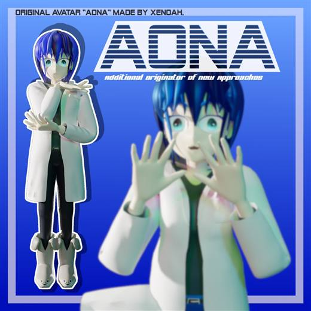
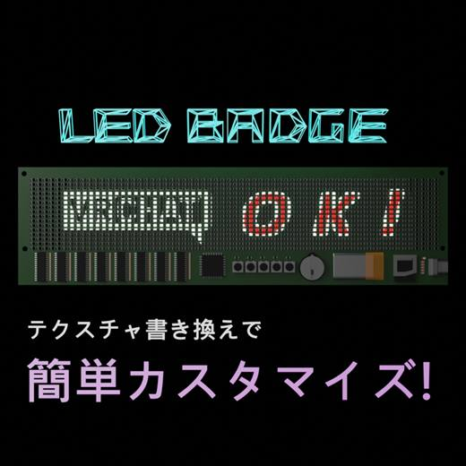
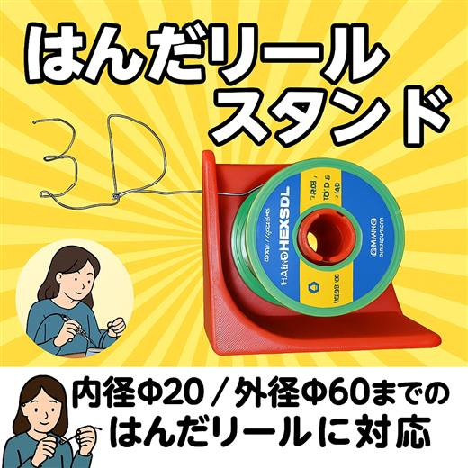
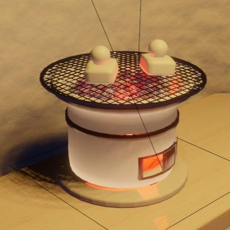
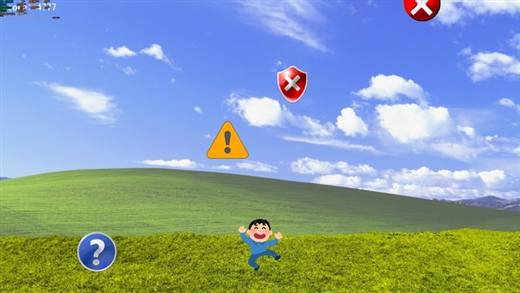
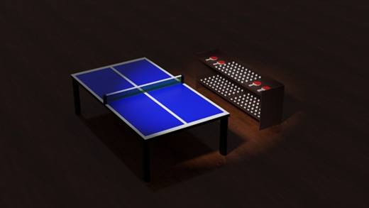

VRChat想定アバター「葵那(Aona)」
完全オリジナルの3Dアバターモデル。PC/Android両対応、FBX・テクスチャ・Unity Packageまで含めた構成で、キャラクターモデリングから配布形式までまとめている。
商品ページPortfolio / Build Log
制御盤・電装・現場作業で得た問題意識を起点に、ブラウザアプリ、ローカル処理ツール、信号処理、CAD風UI、データベース、学習コンテンツを実装しています。 外部サービスに依存しすぎない静的Web構成、ローカル処理、GitHub Pages公開、AI支援を使った高速な試作と検証が主な制作スタイルです。
外部の人にまず伝えたい要点。詳細は各プロジェクトを開くと確認できます。
静的Webアプリ、PDF処理、地図UI、VJ/音声処理、2D CAD風UI、学習サイト、ミニゲーム、データベースまで横断して作成。
FA、帳票、G-code、配線、ローカル処理など、実務に近い問題を小さく分解してプロトタイプ化。
アイデアで止めず、GitHub Pagesで動くURLまで出す。実装範囲、制約、次の改善点も記録。
AI任せにせず、要件定義、実装指示、レビュー、検証、改善判断を自分で担当する開発補助として利用。
徒歩で日光街道(東京→日光)、しまなみ海道(尾道→今治)、一日での山手線一周を制覇。自転車では東海道&国道一号線(東京→京都、大阪)を走破し、体力・計画・継続力を実地で積み上げている。
3D配布物の中から、外部向けに制作力が伝わりやすいものを選定。画像はローカル保存した軽量版を使用しています。

完全オリジナルの3Dアバターモデル。PC/Android両対応、FBX・テクスチャ・Unity Packageまで含めた構成で、キャラクターモデリングから配布形式までまとめている。
商品ページ



DxLibで制作したWindows向け自作ゲーム。上から降ってくるエラーを避けるシンプルなルールで、入力処理、当たり判定、ゲームループ、配布物化まで含めた初期ゲーム制作の成果物。
商品ページ
実物サイズを基準に作成したVRChat向け3Dモデル。物理演算を適用した利用を想定し、blend・fbx・unitypackageを同梱して、ワールド組み込みまで進めやすい構成にしている。
商品ページ主要プロジェクト。各カードは折りたたみ式です。
世界ニュース、災害、自然イベントを地図・時間・カテゴリで俯瞰する静的Webアプリ。
ブラウザだけでPDFの読み込み、ページ編集、注釈、保存を行うローカル処理型PDFエディタ。
画像・動画・音声を読み込み、WebGL / Web Audio / Web MIDIで映像エフェクトを生成するVJツール。
Web Audio APIでシンセ音色を作り、耳と波形で一致を狙うブラウザゲーム。
ブラウザで図形編集やCAD風操作系を検証する2D CADプロトタイプ。
電話のプッシュ音を周波数の組み合わせとして生成・検出する信号処理学習プロジェクト。
ホームページ全体の公開物。カテゴリごとに折りたたみで整理しています。
まだ公開ページとして整っていない試作・学習テーマ。各項目は検証中です。
SVG / DXF / 画像からペンプロッタ用G-codeを生成するデスクトップアプリ構想。
PDFの指定範囲をOCRし、抽出文字列からファイル名を生成する業務改善ツール構想。
KiCad向け自動配線ルータ。DSN/SES形式を介して外部ルータとして動かす研究テーマ。
経験のある領域と、試作・学習段階の領域を分けて記載しています。
FA、電装、PLC周辺、センサ、リレー、AC200 V系、Excel/CSV、帳票、現場トラブルの切り分け。
HTML/CSS/JavaScript、GitHub Pages、Python GUI、PDF処理、OCR、Web Audio、Canvas/WebGL、Web MIDI。
G-code、ツールパス生成、KiCad自動配線、Rust、3Dプリンタ用スライサー、AIエージェント運用。
VRChat、Blender、Unity、VJ表現、俳句ジェネレーター、Web上の小規模実験。